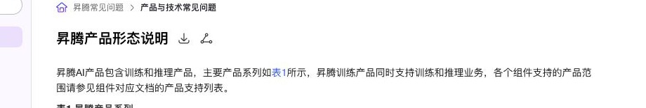

路径链断裂 需可爬链
查看测试页面路径链断裂指面包屑应把当前页在站点中的祖先路径做成可爬链接；若只有纯文本或 JS 渲染，Agent 无法沿路径回溯上下文。 以 昇腾产品形态说明 为例：文档页顶栏 o-breadcrumb 可见三级路径链；设计期望 ancestors 为 a[href]，当前页为纯文本。
问题实测
1. 向模型提问
我在看 昇腾产品形态说明，当前页在站点层级中的完整路径是什么？每一级祖先页的可点击链接分别是什么？
2. 大模型回答
友商测试
| 友商 | 案例 | 被测对象 | html 可抓取 | 原因 |
|---|---|---|---|---|
| NVIDIA | Release Notes | bd-breadcrumbs 路径链面包屑 | 可抓全 | bd-breadcrumbs 祖先项（Home、cuDensityMat）带真实 href，当前页 Release Notes 为纯文本，路径链在静态 HTML 可抓全。 |
| 昇腾社区 | AscendFAQ | o-breadcrumb 路径链面包屑 | 抓不全 | 顶栏 o-breadcrumb 可见三级路径，但静态 HTML 首包仅部分 ancestors 可链，中间层级需客户端补全。 |
根因分析
路径链断裂的核心原因：人在浏览器里能看见完整面包屑、祖先也能点，但「查看网页源代码」里中间祖先没有写进首包链接——只有「文档中心 → 当前页」两条，还和可见路径对不上，所以爬虫和 AI 没法按人眼看到的层级一层层往上找。
实测证据 · 浏览器面包屑 vs 静态源码
浏览器里能看见的面包屑

左图祖先开 JS 后能点；右边源码只有「文档中心 → 当前页」，中间级不在。
「查看网页源代码」里只有两条，且对不上
<!-- 查看网页源代码 / 禁 JS：server-breadcrumb 仅 2 个 a[href] --> <div class="o-breadcrumb server-breadcrumb"> <a href="/sitemap/sitemapdoc1.xml">文档中心</a> <a href="…/hardwaredesc_0001.html">昇腾产品形态说明</a> </div> <!-- 浏览器可见「昇腾常见问题 › 产品与技术常见问题 › …」；中间祖先不在首包 -->
1. 源码里缺少与可见 UI 一致的祖先链
问题：打开昇腾产品形态说明页，用「查看网页源代码」核对：server-breadcrumb 没有「昇腾常见问题 / 产品与技术常见问题」。浏览器里这两级可以点，但要等脚本跑完才补进面包屑——禁 JS 时跟不到与人眼一致的上级文档。
证据 · 祖先链本来应该长这样
期望写进网页的面包屑（示意）
<nav aria-label="Breadcrumb" class="o-breadcrumb"> <a href="/document/detail/zh/AscendFAQ/…">昇腾常见问题</a> <a href="/document/detail/zh/AscendFAQ/ProduTech/…">产品与技术常见问题</a> <span aria-current="page">昇腾产品形态说明</span> </nav>
祖先可跟链；末级当前页用纯文本，不要做成自链。
修改建议
首包直接输出与可见 UI 一致的完整祖先列表：每一级都是带真实文档地址的 a[href]，不要只靠客户端事后补。
2. 首包那两条链接本身也不对
问题：源码里仅有的「文档中心」链到 /sitemap/sitemapdoc1.xml（站点地图，不是手册祖先页），「昇腾产品形态说明」又链回当前页自己。即便爬虫跟了这两条，也到不了「昇腾常见问题 / 产品与技术常见问题」，还会和可见路径文案错位。
证据 · 首包两条链的问题
实测源码摘录
<a href="/sitemap/sitemapdoc1.xml">文档中心</a> <!-- ↑ 应是手册祖先，不是 sitemap XML --> <a href="…/hardwaredesc_0001.html">昇腾产品形态说明</a> <!-- ↑ 当前页自链；末级宜为纯文本 -->
有 a[href] 不等于达标：目标页和文案都要对上可见层级。
修改建议
祖先 href 指向真实文档页，文案与侧栏 / sitemap 一致；当前页改为纯文本，勿输出自链。
3. 也没有备用的祖先路径清单
问题：页面面包屑读不全时，如果 llms.txt 或 Markdown 里也没有写出「当前页 → 各级祖先」的链接，AI 就只知道这一页标题，无法沿手册结构往上找上下文。
修改建议
在 llms.txt 或手册平行轨临时补一份祖先链；页面 SSR 达标后以页面为准，去掉重复维护。